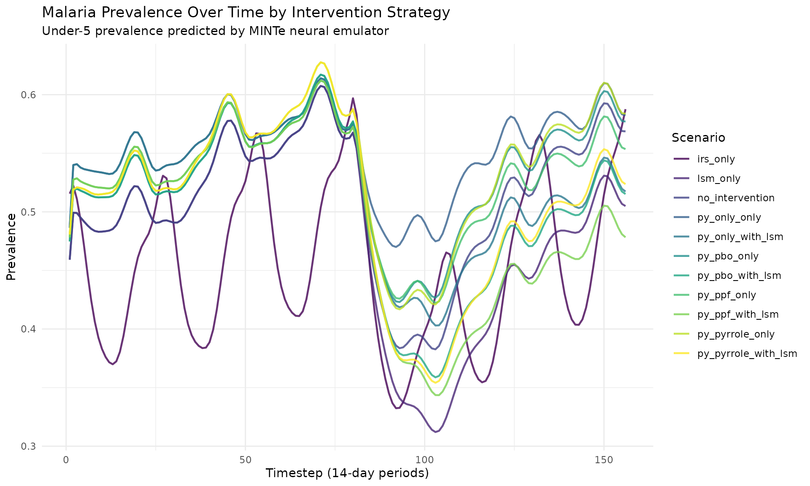
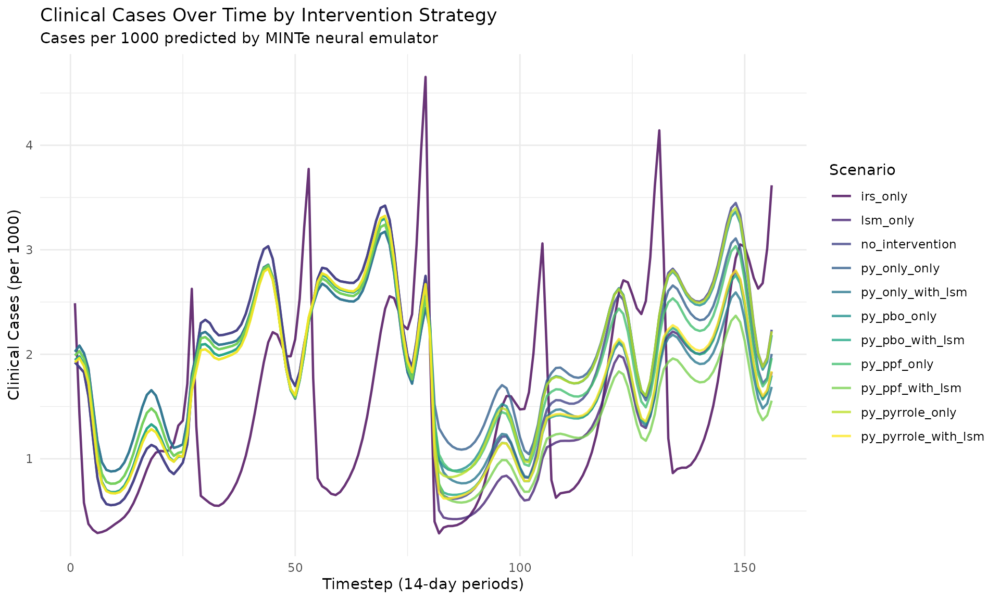
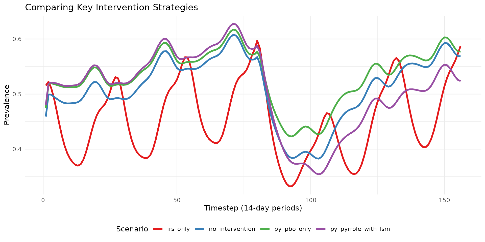
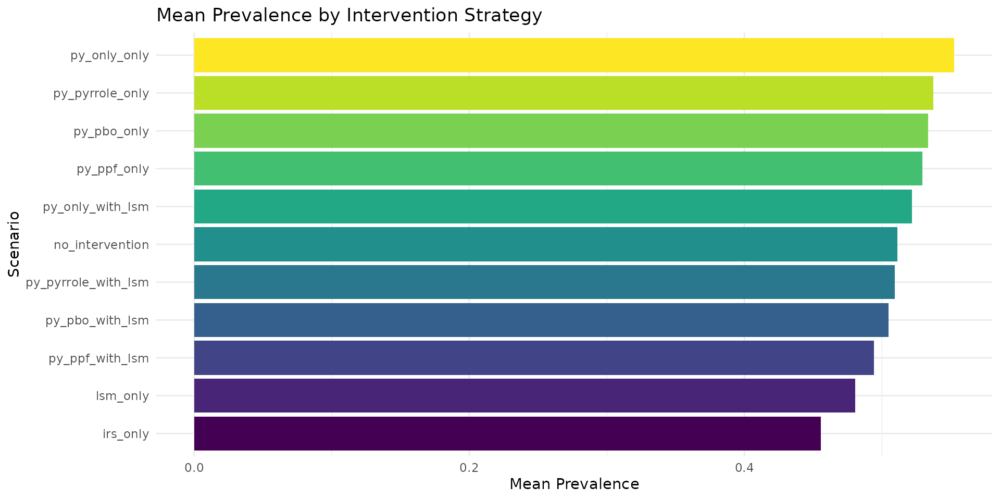
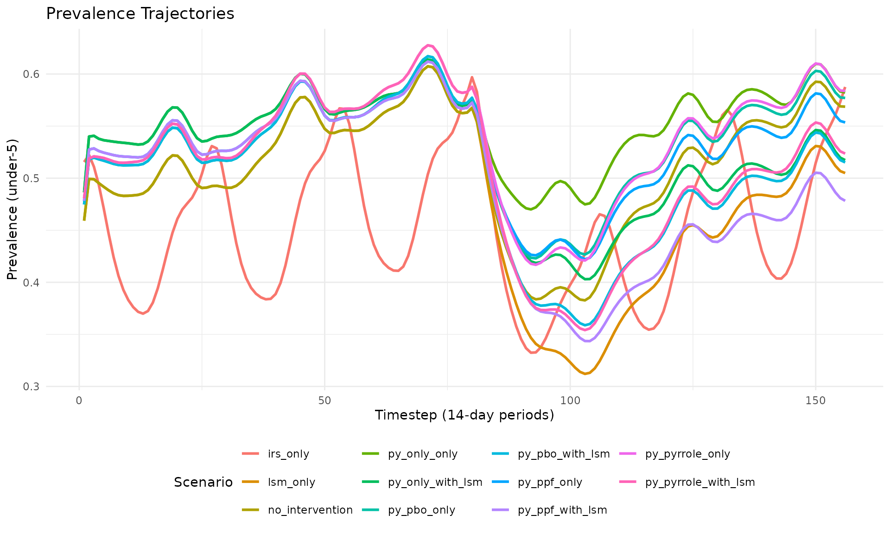
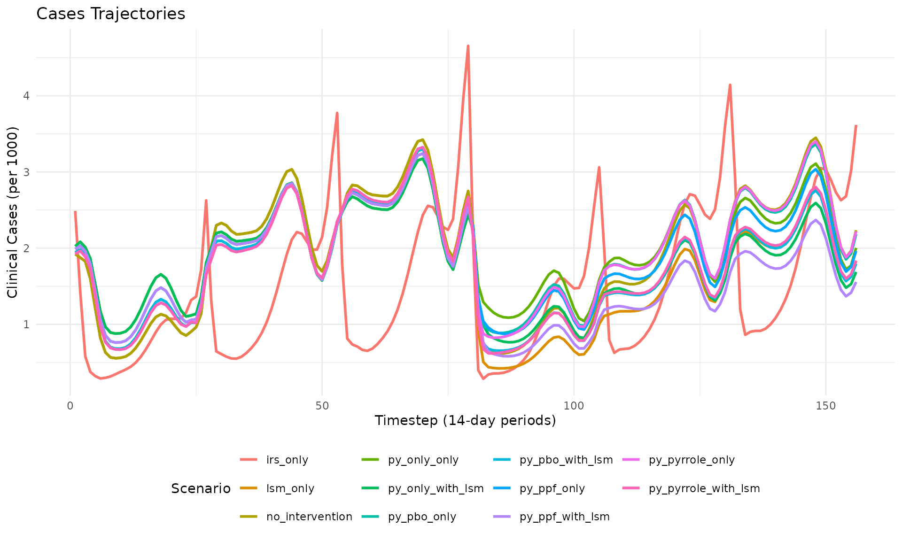

Working with rminte: R interface for MINTe malaria intervention emulator
Source:vignettes/rminte-tutorial.Rmd
rminte-tutorial.RmdWorking with rminte: R interface for MINTe malaria intervention emulator
This vignette walks through how to:
- Install and load the rminte package
- Run single and multiple scenarios
with
run_minter_scenarios() - Understand the outputs (prevalence, cases, scenario metadata)
- Explore results using tidyverse tools
- Visualize results with ggplot2
- Export results to CSV for further analysis
We treat the ML models as a black box surrogate for
malariasimulation:
- You provide: baseline setting + intervention package(s)
- MINTe returns: predicted prevalence and clinical cases over time
1. Installation and Setup
# Install rminte (if not already installed)
# devtools::install_local("path/to/rminte")
# The Python minte package will be automatically installed via reticulate
# when you first use the package (via py_require)
# Check if minte is available
cat("minte available:", minte_available(), "\n")
#> minte available: TRUE2. What run_minter_scenarios() does
At a high level, run_minter_scenarios():
- Back-calculates EIR from current prevalence and interventions using the pre-trained estiMINT XGBoost model
- Builds a scenario table with baseline EIR, current and future ITN/IRS/LSM, vector behaviour, resistance & net quality
- Runs the neural emulator to predict:
- Under-5 daily prevalence trajectories
- All-age daily clinical incidence trajectories per 1000
- Returns a results object with:
-
prevalence- Data frame of prevalence over time for each scenario -
cases- Data frame of clinical cases over time for each scenario -
scenario_meta- Per-scenario metadata including EIR validity -
eir_valid- TRUE/FALSE flag -
benchmarks- Runtime timings (optional)
-
3. A Single Simple Scenario
Here we run one scenario by passing single values (or length-1 vectors).
# Example: a single scenario
res_one <- run_minter_scenarios(
scenario_tag = "example_scenario",
res_use = 0.2, # current resistance
py_only = 0.3, # pyrethroid-only net coverage
py_pbo = 0.2, # PBO net coverage
py_pyrrole = 0.1, # pyrrole net coverage
py_ppf = 0.05, # PPF net coverage
prev = 0.55, # current under-5 prevalence at decision time
Q0 = 0.92, # proportion of bites indoors
phi = 0.85, # proportion of bites while people are in bed
season = 0, # 0 = perennial, 1 = strongly seasonal
irs = 0.4, # current IRS coverage
irs_future = 0.4, # future IRS coverage
lsm = 0.2, # future LSM coverage
routine = 1, # 1 = routine ITN distribution on
itn_future = 0.45, # future ITN coverage
net_type_future = "py_only"
)
# Print summary
print(res_one)
#> MINTer Results
#> ==============
#> Prevalence predictions: 156 rows
#> Cases predictions: 156 rows
#> Scenarios: 1
#> EIR valid: TRUE4. Understanding the Output Structure
The result object exposes the main outputs as list elements:
-
res_one$prevalence- Data frame with prevalence over time -
res_one$cases- Data frame with clinical cases over time
# View first few rows of prevalence
cat("Prevalence (head):\n")
#> Prevalence (head):
head(res_one$prevalence)
#> index timestep prevalence model_type scenario scenario_tag
#> 1 0 1 0.5459521 LSTM example_scenario example_scenario
#> 2 0 2 0.5551386 LSTM example_scenario example_scenario
#> 3 0 3 0.5465310 LSTM example_scenario example_scenario
#> 4 0 4 0.5329272 LSTM example_scenario example_scenario
#> 5 0 5 0.5144109 LSTM example_scenario example_scenario
#> 6 0 6 0.4937868 LSTM example_scenario example_scenario
#> eir_valid
#> 1 TRUE
#> 2 TRUE
#> 3 TRUE
#> 4 TRUE
#> 5 TRUE
#> 6 TRUE
# View first few rows of cases
cat("\nCases (head):\n")
#>
#> Cases (head):
head(res_one$cases)
#> index timestep cases model_type scenario scenario_tag
#> 1 0 1 2.5116408 LSTM example_scenario example_scenario
#> 2 0 2 1.5747907 LSTM example_scenario example_scenario
#> 3 0 3 0.7914336 LSTM example_scenario example_scenario
#> 4 0 4 0.5347684 LSTM example_scenario example_scenario
#> 5 0 5 0.4381712 LSTM example_scenario example_scenario
#> 6 0 6 0.3793794 LSTM example_scenario example_scenario
#> eir_valid
#> 1 TRUE
#> 2 TRUE
#> 3 TRUE
#> 4 TRUE
#> 5 TRUE
#> 6 TRUE5. Running Multiple Scenarios
Now let’s compare several intervention strategies. We’ll create scenarios for:
- No intervention (baseline)
- IRS only
- LSM only
- Different net types (py_only, py_pbo, py_pyrrole, py_ppf)
- Combinations with LSM
# Define multiple scenarios
scenarios <- list(
list(tag = "no_intervention", irs = 0.0, irs_future = 0.0, lsm = 0.0,
py_only = 0.3, py_pbo = 0.2, py_pyrrole = 0.1, py_ppf = 0.05),
list(tag = "irs_only", irs = 0.5, irs_future = 0.5, lsm = 0.0,
py_only = 0.3, py_pbo = 0.2, py_pyrrole = 0.1, py_ppf = 0.05),
list(tag = "lsm_only", irs = 0.0, irs_future = 0.0, lsm = 0.3,
py_only = 0.3, py_pbo = 0.2, py_pyrrole = 0.1, py_ppf = 0.05),
list(tag = "py_only_only", irs = 0.0, irs_future = 0.0, lsm = 0.0,
py_only = 0.5, py_pbo = 0.0, py_pyrrole = 0.0, py_ppf = 0.0),
list(tag = "py_only_with_lsm", irs = 0.0, irs_future = 0.0, lsm = 0.3,
py_only = 0.5, py_pbo = 0.0, py_pyrrole = 0.0, py_ppf = 0.0),
list(tag = "py_pbo_only", irs = 0.0, irs_future = 0.0, lsm = 0.0,
py_only = 0.0, py_pbo = 0.5, py_pyrrole = 0.0, py_ppf = 0.0),
list(tag = "py_pbo_with_lsm", irs = 0.0, irs_future = 0.0, lsm = 0.3,
py_only = 0.0, py_pbo = 0.5, py_pyrrole = 0.0, py_ppf = 0.0),
list(tag = "py_ppf_only", irs = 0.0, irs_future = 0.0, lsm = 0.0,
py_only = 0.0, py_pbo = 0.0, py_pyrrole = 0.0, py_ppf = 0.5),
list(tag = "py_ppf_with_lsm", irs = 0.0, irs_future = 0.0, lsm = 0.3,
py_only = 0.0, py_pbo = 0.0, py_pyrrole = 0.0, py_ppf = 0.5),
list(tag = "py_pyrrole_only", irs = 0.0, irs_future = 0.0, lsm = 0.0,
py_only = 0.0, py_pbo = 0.0, py_pyrrole = 0.5, py_ppf = 0.0),
list(tag = "py_pyrrole_with_lsm", irs = 0.0, irs_future = 0.0, lsm = 0.3,
py_only = 0.0, py_pbo = 0.0, py_pyrrole = 0.5, py_ppf = 0.0)
)
n <- length(scenarios)
# Extract vectors for each parameter
res_multi <- run_minter_scenarios(
scenario_tag = sapply(scenarios, `[[`, "tag"),
res_use = rep(0.2, n),
py_only = sapply(scenarios, `[[`, "py_only"),
py_pbo = sapply(scenarios, `[[`, "py_pbo"),
py_pyrrole = sapply(scenarios, `[[`, "py_pyrrole"),
py_ppf = sapply(scenarios, `[[`, "py_ppf"),
prev = rep(0.55, n),
Q0 = rep(0.92, n),
phi = rep(0.85, n),
season = rep(0, n),
irs = sapply(scenarios, `[[`, "irs"),
irs_future = sapply(scenarios, `[[`, "irs_future"),
lsm = sapply(scenarios, `[[`, "lsm"),
routine = rep(1, n),
benchmark = TRUE
)
#>
#> === Benchmark Results ===
#> Pre-load models to cache: 0.000 seconds
#> Run EIR predictions (11 scenarios): 0.054 seconds
#> Run Prevalence NN (11 scenarios): 0.043 seconds
#> Run Cases NN (11 scenarios): 0.062 seconds
#>
#> Total time: 0.160 seconds
#> ==============================
print(res_multi)
#> MINTer Results
#> ==============
#> Prevalence predictions: 1716 rows
#> Cases predictions: 1716 rows
#> Scenarios: 11
#> EIR valid: TRUE
#>
#> Benchmarks:
#> preload_models : 2.622604e-06
#> run_eir_models : 0.0540297
#> run_neural_network_prevalence : 0.04264092
#> run_neural_network_cases : 0.06245422
#> total : 0.1598759
#> total_scenarios : 116. Exploring Results with dplyr
Let’s use tidyverse tools to analyze the results.
# First few rows by scenario
res_multi$prevalence %>%
group_by(scenario_tag) %>%
slice_head(n = 3) %>%
print(n = 20)
#> # A tibble: 33 × 7
#> # Groups: scenario_tag [11]
#> index timestep prevalence model_type scenario scenario_tag eir_valid
#> <dbl> <dbl> <dbl> <chr> <chr> <chr> <lgl>
#> 1 1 1 0.516 LSTM irs_only irs_only FALSE
#> 2 1 2 0.522 LSTM irs_only irs_only FALSE
#> 3 1 3 0.511 LSTM irs_only irs_only FALSE
#> 4 2 1 0.459 LSTM lsm_only lsm_only TRUE
#> 5 2 2 0.499 LSTM lsm_only lsm_only TRUE
#> 6 2 3 0.499 LSTM lsm_only lsm_only TRUE
#> 7 0 1 0.459 LSTM no_intervention no_intervent… TRUE
#> 8 0 2 0.499 LSTM no_intervention no_intervent… TRUE
#> 9 0 3 0.499 LSTM no_intervention no_intervent… TRUE
#> 10 3 1 0.486 LSTM py_only_only py_only_only TRUE
#> 11 3 2 0.540 LSTM py_only_only py_only_only TRUE
#> 12 3 3 0.541 LSTM py_only_only py_only_only TRUE
#> 13 4 1 0.486 LSTM py_only_with_lsm py_only_with… TRUE
#> 14 4 2 0.540 LSTM py_only_with_lsm py_only_with… TRUE
#> 15 4 3 0.541 LSTM py_only_with_lsm py_only_with… TRUE
#> 16 5 1 0.475 LSTM py_pbo_only py_pbo_only TRUE
#> 17 5 2 0.518 LSTM py_pbo_only py_pbo_only TRUE
#> 18 5 3 0.520 LSTM py_pbo_only py_pbo_only TRUE
#> 19 6 1 0.475 LSTM py_pbo_with_lsm py_pbo_with_… TRUE
#> 20 6 2 0.518 LSTM py_pbo_with_lsm py_pbo_with_… TRUE
#> # ℹ 13 more rows
# Mean prevalence over all timesteps by scenario
mean_prev <- res_multi$prevalence %>%
group_by(scenario_tag) %>%
summarise(mean_prevalence = mean(prevalence, na.rm = TRUE)) %>%
arrange(mean_prevalence)
cat("\nMean prevalence by scenario (sorted):\n")
#>
#> Mean prevalence by scenario (sorted):
print(mean_prev)
#> # A tibble: 11 × 2
#> scenario_tag mean_prevalence
#> <chr> <dbl>
#> 1 irs_only 0.456
#> 2 lsm_only 0.481
#> 3 py_ppf_with_lsm 0.494
#> 4 py_pbo_with_lsm 0.505
#> 5 py_pyrrole_with_lsm 0.509
#> 6 no_intervention 0.511
#> 7 py_only_with_lsm 0.522
#> 8 py_ppf_only 0.529
#> 9 py_pbo_only 0.534
#> 10 py_pyrrole_only 0.537
#> 11 py_only_only 0.553
# Mean cases by scenario
mean_cases <- res_multi$cases %>%
group_by(scenario_tag) %>%
summarise(mean_cases = mean(cases, na.rm = TRUE)) %>%
arrange(mean_cases)
cat("\nMean cases by scenario (sorted):\n")
#>
#> Mean cases by scenario (sorted):
print(mean_cases)
#> # A tibble: 11 × 2
#> scenario_tag mean_cases
#> <chr> <dbl>
#> 1 irs_only 1.52
#> 2 py_ppf_with_lsm 1.68
#> 3 lsm_only 1.73
#> 4 py_pbo_with_lsm 1.77
#> 5 py_pyrrole_with_lsm 1.77
#> 6 py_only_with_lsm 1.79
#> 7 py_ppf_only 1.90
#> 8 no_intervention 1.92
#> 9 py_pyrrole_only 1.95
#> 10 py_pbo_only 1.95
#> 11 py_only_only 1.987. Visualization with ggplot2
Prevalence Over Time (All Scenarios)
ggplot(res_multi$prevalence, aes(x = timestep, y = prevalence,
color = scenario_tag)) +
geom_line(linewidth = 0.8, alpha = 0.8) +
labs(
title = "Malaria Prevalence Over Time by Intervention Strategy",
subtitle = "Under-5 prevalence predicted by MINTe neural emulator",
x = "Timestep (14-day periods)",
y = "Prevalence",
color = "Scenario"
) +
theme_minimal() +
theme(legend.position = "right") +
scale_color_viridis_d()
Cases Over Time (All Scenarios)
ggplot(res_multi$cases, aes(x = timestep, y = cases,
color = scenario_tag)) +
geom_line(linewidth = 0.8, alpha = 0.8) +
labs(
title = "Clinical Cases Over Time by Intervention Strategy",
subtitle = "Cases per 1000 predicted by MINTe neural emulator",
x = "Timestep (14-day periods)",
y = "Clinical Cases (per 1000)",
color = "Scenario"
) +
theme_minimal() +
theme(legend.position = "right") +
scale_color_viridis_d()
Comparing Selected Scenarios
# Compare key scenarios
selected <- c("no_intervention", "irs_only", "py_pbo_only", "py_pyrrole_with_lsm")
res_multi$prevalence %>%
filter(scenario_tag %in% selected) %>%
ggplot(aes(x = timestep, y = prevalence, color = scenario_tag)) +
geom_line(linewidth = 1.2) +
labs(
title = "Comparing Key Intervention Strategies",
x = "Timestep (14-day periods)",
y = "Prevalence",
color = "Scenario"
) +
theme_minimal() +
theme(legend.position = "bottom") +
scale_color_brewer(palette = "Set1")
Bar Chart of Mean Prevalence
mean_prev %>%
mutate(scenario_tag = reorder(scenario_tag, mean_prevalence)) %>%
ggplot(aes(x = scenario_tag, y = mean_prevalence, fill = scenario_tag)) +
geom_col() +
coord_flip() +
labs(
title = "Mean Prevalence by Intervention Strategy",
x = "Scenario",
y = "Mean Prevalence"
) +
theme_minimal() +
theme(legend.position = "none") +
scale_fill_viridis_d()
8. Using Built-in Plotting Functions
rminte also provides convenience plotting functions:
# Using the built-in plot_prevalence function
plot_prevalence(res_multi, title = "Prevalence Trajectories")
# Using the built-in plot_cases function
plot_cases(res_multi, title = "Cases Trajectories")
10. Utility Functions
rminte provides several utility functions:
# Calculate net effectiveness from resistance
dn0_result <- calculate_overall_dn0(
resistance_level = 0.3,
py_only = 0.4,
py_pbo = 0.3,
py_pyrrole = 0.2,
py_ppf = 0.1
)
cat("Calculated dn0:", dn0_result$dn0, "\n")
#> Calculated dn0: 0.4193867
cat("Total ITN use:", dn0_result$itn_use, "\n")
#> Total ITN use: 1
# Get available net types
net_types <- available_net_types()
cat("Available net types:", paste(net_types, collapse = ", "), "\n")
#> Available net types: pyrethroid_only, pyrethroid_pbo, pyrethroid_ppf, pyrethroid_pyrroleSummary
This vignette demonstrated how to:
-
Run scenarios using
run_minter_scenarios()with various intervention parameters -
Access results via the returned list
(
$prevalence,$cases,$scenario_meta) - Analyze data using dplyr for grouping and summarizing
- Visualize with ggplot2 or built-in plotting functions
- Export results to CSV for further analysis
The rminte package provides a seamless R interface to the Python MINTe neural emulator, allowing you to rapidly evaluate malaria intervention strategies without running full simulations.
Session Info
sessionInfo()
#> R version 4.5.2 (2025-10-31)
#> Platform: x86_64-pc-linux-gnu
#> Running under: Ubuntu 24.04.3 LTS
#>
#> Matrix products: default
#> BLAS: /usr/lib/x86_64-linux-gnu/openblas-pthread/libblas.so.3
#> LAPACK: /usr/lib/x86_64-linux-gnu/openblas-pthread/libopenblasp-r0.3.26.so; LAPACK version 3.12.0
#>
#> locale:
#> [1] LC_CTYPE=C.UTF-8 LC_NUMERIC=C LC_TIME=C.UTF-8
#> [4] LC_COLLATE=C.UTF-8 LC_MONETARY=C.UTF-8 LC_MESSAGES=C.UTF-8
#> [7] LC_PAPER=C.UTF-8 LC_NAME=C LC_ADDRESS=C
#> [10] LC_TELEPHONE=C LC_MEASUREMENT=C.UTF-8 LC_IDENTIFICATION=C
#>
#> time zone: UTC
#> tzcode source: system (glibc)
#>
#> attached base packages:
#> [1] stats graphics grDevices utils datasets methods base
#>
#> other attached packages:
#> [1] tidyr_1.3.1 ggplot2_4.0.1 dplyr_1.1.4 rminte_0.1.0
#>
#> loaded via a namespace (and not attached):
#> [1] Matrix_1.7-4 gtable_0.3.6 jsonlite_2.0.0 compiler_4.5.2
#> [5] tidyselect_1.2.1 Rcpp_1.1.0 jquerylib_0.1.4 systemfonts_1.3.1
#> [9] scales_1.4.0 textshaping_1.0.4 png_0.1-8 yaml_2.3.11
#> [13] fastmap_1.2.0 here_1.0.2 reticulate_1.44.1 lattice_0.22-7
#> [17] R6_2.6.1 labeling_0.4.3 generics_0.1.4 knitr_1.50
#> [21] tibble_3.3.0 desc_1.4.3 rprojroot_2.1.1 RColorBrewer_1.1-3
#> [25] bslib_0.9.0 pillar_1.11.1 rlang_1.1.6 utf8_1.2.6
#> [29] cachem_1.1.0 xfun_0.54 S7_0.2.1 fs_1.6.6
#> [33] sass_0.4.10 viridisLite_0.4.2 cli_3.6.5 withr_3.0.2
#> [37] pkgdown_2.2.0 magrittr_2.0.4 digest_0.6.39 grid_4.5.2
#> [41] rappdirs_0.3.3 lifecycle_1.0.4 vctrs_0.6.5 evaluate_1.0.5
#> [45] glue_1.8.0 farver_2.1.2 ragg_1.5.0 purrr_1.2.0
#> [49] rmarkdown_2.30 tools_4.5.2 pkgconfig_2.0.3 htmltools_0.5.9